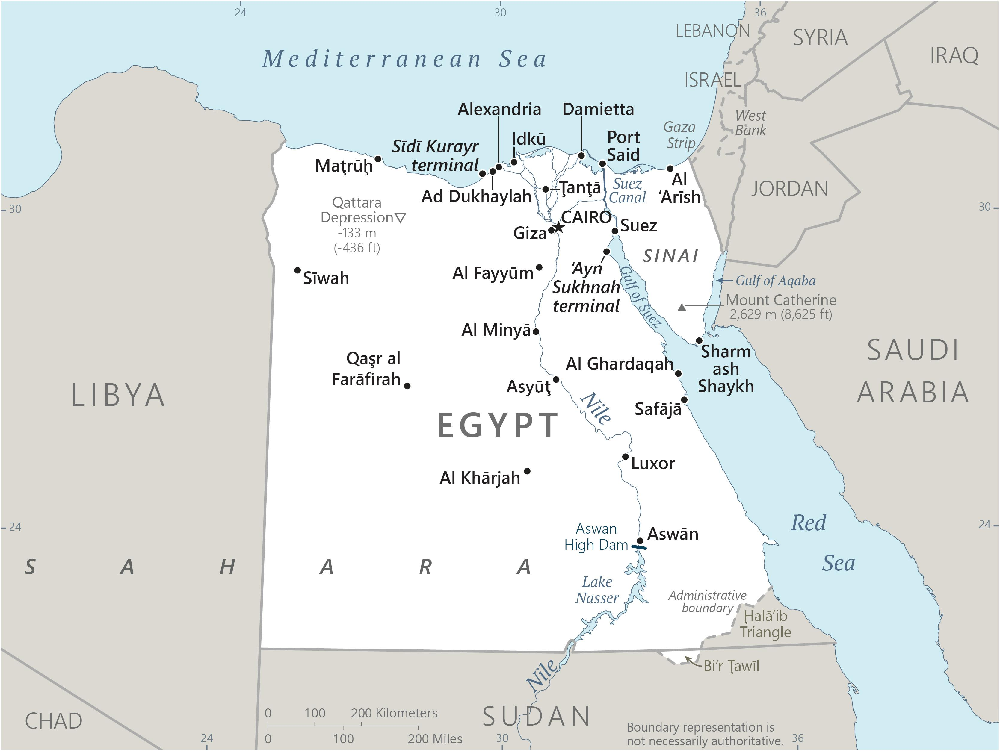

Genel Bilgiler
Mısır, Kuzey Afrika’da yer alan üniter bir cumhuriyettir. Başkenti Kahire’dir. Yaklaşık 110 milyon nüfusa sahiptir. Resmî dili Arapça’dır ve para birimi Mısır Lirası (EGP)’dır. Mısır, Afrika Birliği ve Arap Ligi üyesidir ve tarihi ile kültürel mirasıyla dünya çapında tanınır.
Mısır, kuzeyde Akdeniz, doğuda Kızıldeniz ve İsrail, güneyde Sudan, batıda Libya ile çevrilidir. Yüzölçümü yaklaşık 1.010.408 km²’dir. Ülke coğrafyası çoğunlukla çöl ve Nil Nehri vadisinden oluşur. Nil Nehri, ülkenin en önemli su kaynağıdır ve tarım alanlarını besler.
Başkent: Kahire
Kıta: Orta Doğu ve Kuzey Afrika
Yüzölçümü: 1.001.450 km²
Nüfus (2025): 104.1 milyon

Bayrak Anlamı: Mısır bayrağı yatay üç eşit şeritten oluşur: kırmızı, beyaz ve siyah. Beyaz şeridin ortasında altın sarısı kartal yer alır. Kırmızı bağımsızlık ve devrimi, beyaz barışı ve saflığı, siyah sömürgecilikten kurtuluşu simgeler. Kartal ise güç ve ulusal birliği temsil eder. Bayrak 1984 yılında kabul edilmiştir.
Mısır Haritası
Ekonomi
Mısır ekonomisi tarım, sanayi ve hizmet sektörlerine dayanır. Tarımda buğday, pirinç, pamuk ve sebze üretimi önemlidir. Sanayi sektöründe petrol, doğalgaz, tekstil ve gıda işleme öne çıkar. Hizmet sektörü özellikle turizm, finans ve ulaştırma alanlarında gelişmiştir. Nil Nehri ve Süveyş Kanalı, ülke ekonomisi için stratejik öneme sahiptir.
| Yıl | İhracat (Milyar $) | İthalat (Milyar $) |
|---|---|---|
| 2019 | 30 | 63 |
| 2020 | 27 | 50 |
| 2021 | 35 | 60 |
| 2022 | 40 | 65 |
| 2023 | 45 | 70 |